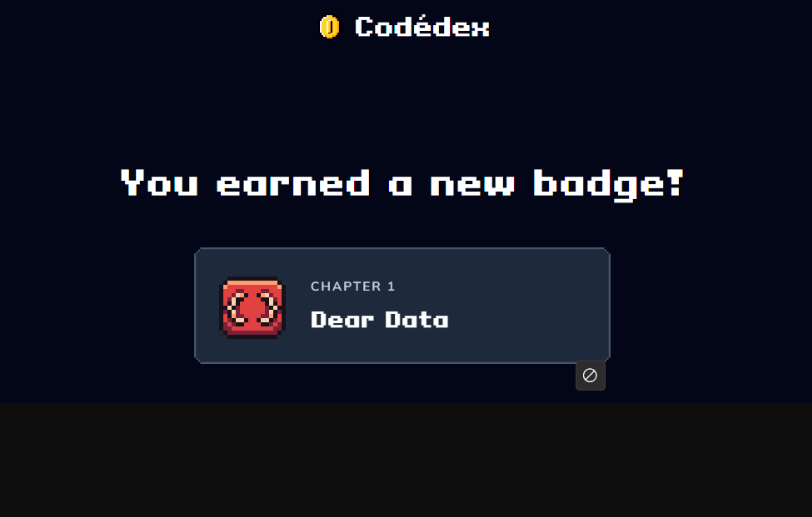
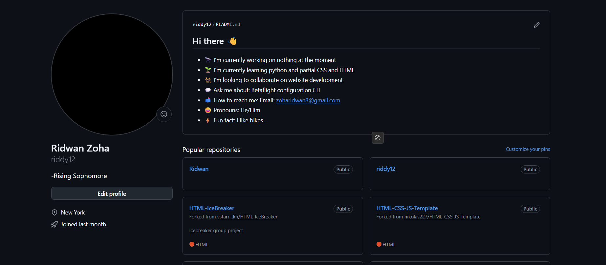
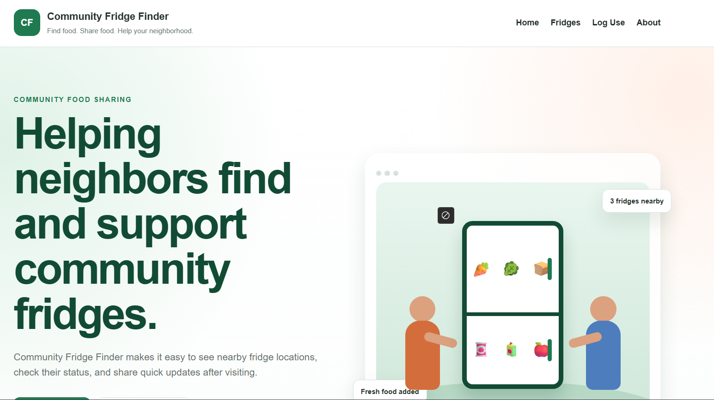
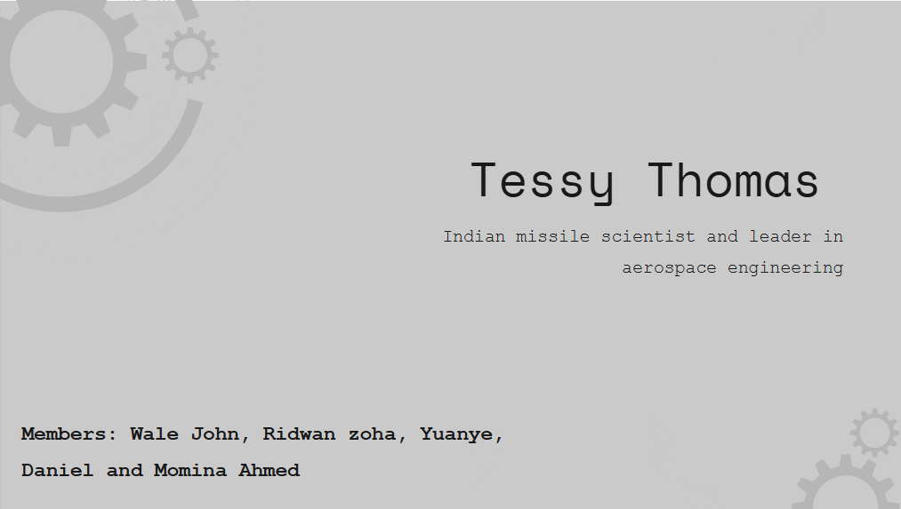

Forza Horizon 5
I like the fast cars, realistic graphics, races, and freedom to explore the open world.
WELCOME TO MY PORTFOLIO
I enjoy gaming, drones, biking, technology, and learning how to create things with code.
Explore my portfolioABOUT ME
My name is Ridwan, and I am currently a sophomore at Al-Mamoor School. I enjoy exploring open-world games, building and flying drones, riding bikes, and improving my technology skills.
This class was my first real experience learning how to code. Through my projects, I learned how websites are designed, organized, tested, and published online.
MY FAVORITES
I like the fast cars, realistic graphics, races, and freedom to explore the open world.

I enjoy the huge variety of games and the creativity of worlds made by other players.

I like learning how drones work, flying them, troubleshooting problems, and seeing the world from the air.
Biking is exciting, keeps me active, and gives me a fun way to explore new places.
IDENTIFY YOUR LEARNING

This class was my first real experience learning how to code and build complete websites.
I learned HTML, CSS, JavaScript, GitHub, VS Code, and web design. HTML taught me how to organize the content of a webpage. CSS taught me how to control colors, fonts, spacing, layouts, cards, images, and the overall appearance of a website.
I also learned how JavaScript can make a website interactive. GitHub taught me how to store my projects online, organize my files, and publish a website that other people can visit.
The topics that stood out to me the most were CSS and web design. I liked seeing how a few changes could completely improve the appearance of a page. I learned that coding is not only about making something work. It is also about making it organized, understandable, and enjoyable to use.
NAME YOUR PROGRESS
Before this class, I was somewhat interested in technology, but I had never seriously learned how to code. At first, HTML and CSS looked confusing because there were many tags, properties, files, and different ways to create the same result.
The hardest parts were making the layout work correctly and getting my images to appear. I learned how important filenames, folder locations, image extensions, and CSS rules are. Even a small error could change or break the whole page.
I learned how to organize my project, upload it to GitHub, and use GitHub Pages to turn it into a live website. Publishing my work made the project feel complete because other people could finally visit and use it.

PORTFOLIO DEVELOPMENT

TEAM PROJECT
I worked with a team to create a Community Fridge Finder website. The website was designed to help people find nearby community fridges, check their status, and log when food was added or taken.
This project showed me how technology can help solve a real community problem. It also taught me that teamwork requires people to share ideas, divide responsibilities, communicate, and combine their work into one finished product.

TEAM PRESENTATION
In Teen Tech, I worked in a team of five on a Hidden Figures presentation. Our assignment was to research a lesser-known technologist from an underrepresented background and create a four-to-five-minute slide presentation about their journey, accomplishments, and impact.
My team focused on Tessy Thomas, an Indian missile scientist and aerospace leader. Through this project, I learned how to research a real innovator, organize important information, and present it clearly in a visually appealing slideshow.
This project helped me improve my teamwork, research, design, and presentation skills. It also showed me how technology has been shaped by talented people from many different backgrounds.
MY PROUDEST CLASS PROJECT
My proudest individual class project is this portfolio because it shows how much I learned. I created the layout, selected the colors and fonts, added the images, fixed broken image paths, organized my files, and published the final website using GitHub Pages.
There were several moments when the layout did not look right or an image would not appear. Instead of giving up, I kept changing the code, checking my filenames, refreshing the page, and testing different solutions until it worked.
FUTURE ENDEAVORS
My goal is to continue learning technology and eventually build something useful that I can sell.
Before taking this class, coding was mostly something I was curious about. Now that I have created and published a real website, I can see myself continuing to learn coding and possibly using technology as a career.
I am especially interested in drones and robotics because they combine software, electronics, creativity, and hands-on building. In the future, I would like to create a product that uses these skills to solve a real problem.
Improve my HTML, CSS, JavaScript, and web-design skills.
Learn more about programming, electronics, and robotics.
Build a drone, robotics, website, or app-based product.
Create something useful enough that people would pay for it.
WHAT I'M LEARNING